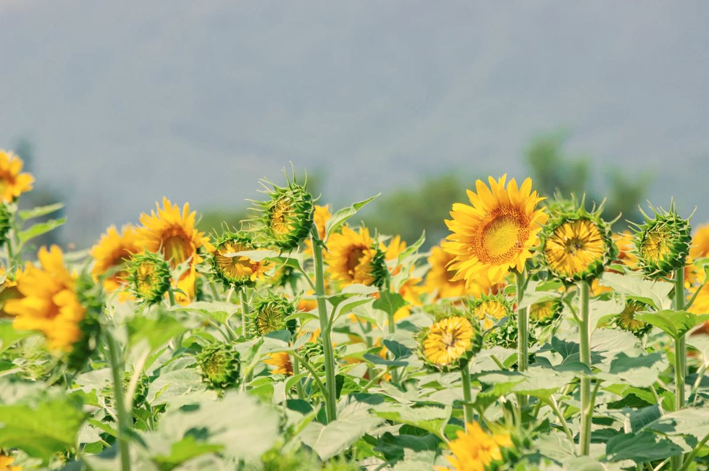

Лето — время главного медосбора. Пчёлы работают с утра до вечера, а пасечник следит, чтобы мёд успел созреть.
Пчела собирает нектар, а в улье его перерабатывают: добавляют ферменты и испаряют лишнюю воду. Когда мёд созревает, пчёлы запечатывают ячейки воском. Рамки с запечатанным мёдом как раз и качает пасечник. Незапечатанный мёд обычно не трогают: в нём ещё слишком много воды, и он быстрее закисает.
В начале лета цветёт акация, и из неё выходит первая откачка: светлый нежный мёд. Акация цветёт недолго, обычно не больше двух недель, поэтому этот мёд бывает не каждый год. Подробнее на странице «Акациевый мёд».
Потом идёт всё, что цветёт в поле и лесу. Состав разнотравья каждый год другой, поэтому и мёд получается то светлее, то темнее, с разным вкусом. Об этом рассказывает страница «Разнотравье» и статья «Почему мёд каждый год разный».
В августе наступает очередь подсолнечника: подсолнечный мёд. Он золотистый, душистый и быстро густеет.
Липа даёт нектар редко, а гречиха бывает только тогда, когда её посеяли рядом. Иногда за весь сезон выходит одна откачка. Об этих сортах: липовый мёд и гречишный мёд.
В жару пчёлы носят в улей воду: она испаряется и охлаждает гнездо, а крыльями пчёлы ещё и проветривают улей. Поэтому рядом с пасекой так важна вода, о которой рассказывает страница «Природа вокруг пасеки».
Рамки привозят в отдельное помещение, открывают восковые крышечки и качают мёд в медогонке. Оставшиеся крышечки называют забрусом (про забрус). Как это происходит от рамки до банки, описано в статье «Как мы качаем мёд».
Когда качают мёд?
Когда рамки заполнены и запечатаны воском. Первая откачка — акациевый мёд в начале лета, дальше по сезону.
Почему мёда не каждый год одинаково?
Всё зависит от погоды и цветения: холод, дожди или засуха сокращают медосбор. Иногда за сезон выходит только одна откачка.
Почему мёд бывает разного цвета?
Цвет зависит от растений, с которых пчёлы собрали нектар: акация даёт светлый мёд, гречиха тёмный.